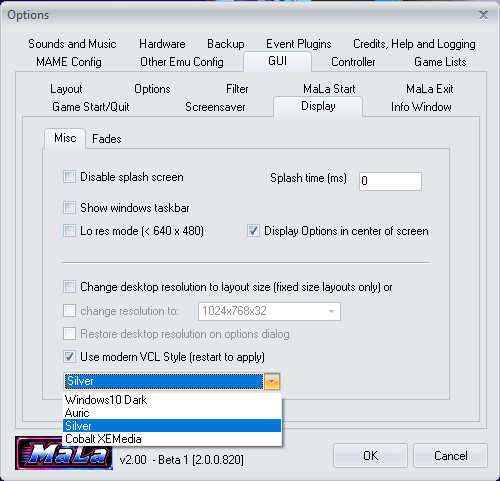
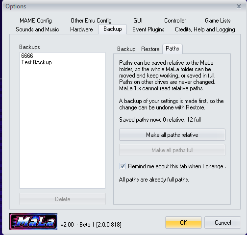
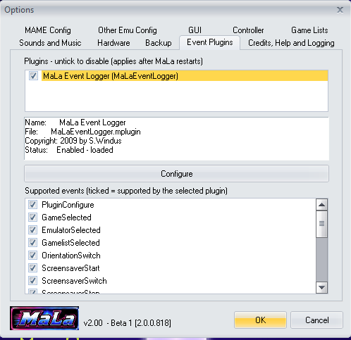
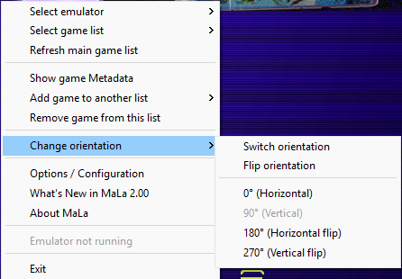

Screenshots
► WANT MORE? SEE THE LAYOUTS
The screenshots below are just a sample. MaLa’s look is completely up to you — the Layouts page has over 60 community layouts, each with its own screenshots and download.
A taste of the layouts
 Alien Dashboard
Alien Dashboard A Clockwork Orange
A Clockwork Orange Bad Dudes
Bad Dudes Atari 2600
Atari 2600New in MaLa 2.0
A few of the screens that are new or changed in the 2.0 work in progress. See the WIP page for the full list.

Choose your look: Options → GUI → Display → Misc

Portable install: store paths relative to the MaLa folder

Event Plugins tab: see and switch off each plugin

Rotate in one step from the right-click menu
MaLa in action
MaLa running the vcp03 layout created by Tobu, plus the Layout Editor and Attract Mode Editor.

Horizontal view with vcp03 layout — by Tobu

Vertical view of the same layout

MaLa menu open

Info window showing game history

Info window showing the control panel picture

MaLa showing the controllers for the selected game

MaLa Layout Editor

MaLa Attract Mode Editor
► MORE LAYOUTSFancy a different look? Browse over 60 community layouts on the Layouts page.